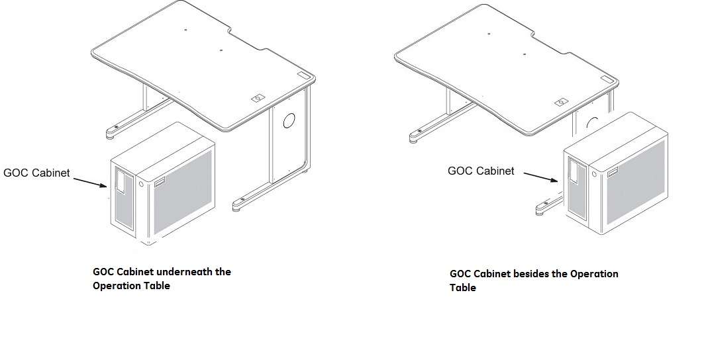
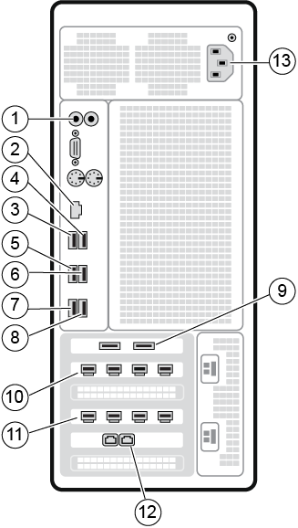

collection file_GOC related content
Carefully unpackage the new GOC and move into place. The packaging materials will be used for return of the old GOC.
Figure 1. Position of GOC


Figure 2. GOC PDU cables
The following volume adjustments are made on the SCIM:
Figure 3. SCIM volume controls

The following volume adjustments are made on the GOC Audio Assembly (GOCAA).
Figure 4. GOCAA volume controls

note: The minimum patient speaker volume is fixed; there is no adjustment for it. Do not adjust AUTOVOICE VOL (R32) or HELP BEEP VOL (R52) (used only for Profile5).
Procedure
- Adjust the maximum SCIM/keyboard speaker volume (R28) - Patient's voice.
- Adjust the patient volume control on the SCIM to the maximum setting by rotating the volume wheel Up with your finger.
- Set R28 to the factory ideal location.
- Rotate R28 control counter-clockwise until an audible clicking sound is heard at the minimum location, then advance control clock-wise 12.5 turns from the minimum location. If successful skip to Step 1.c.
- If an R28 clicking sound cannot be heard, rotate R28 control counter-clockwise at least 30 turns to reach the minimum location, then advance control clock-wise 12.5 turns to the factory ideal location.
- While one person speaks into the patient microphone in the magnet bore, the second person should adjust R28 on the GOCAA to set the desired maximum SCIM/keyboard speaker volume. This is an iterative process. Repeat the voice test until the maximum desired level is achieved.
- Adjust the minimum SCIM/keyboard speaker volume (R13) – Patient’s Voice.
- Adjust the patient volume control on the SCIM to the minimum setting by rotating the volume wheel Down with your finger.
- Set R13 to the factory ideal location.
- Rotate R13 control counter-clockwise until an audible clicking sound is heard at the minimum location, then advance control clock-wise 6 turns from the minimum location. If successful skip to Step 2.c.
- If an R13 clicking sound cannot be heard, rotate R13 control counter-clockwise at least 30 turns to reach the minimum location, then advance control clock-wise 6 turns to the factory ideal location.
- While one person speaks into the patient microphone in the magnet bore, the second person should adjust R13 on the GOCAA to set the desired minimum SCIM/keyboard speaker volume.
- Adjust the maximum patient speaker volume (R67) - Operator's voice.
- Confirm that the magnet room door is open, so that the person at the SCIM making the adjustment can hear the comments from the person listening at the rear of the magnet.
- Adjust the operator volume control on the SCIM to the maximum setting by rotating the volume wheel Up with your finger.
- Set R67 to the factory ideal location.
- Rotate R67 control counter-clockwise until an audible clicking sound is heard at the minimum location, then advance control clock-wise 9 turns from the minimum location. If successful skip to Step 3.d.
- If an R67 clicking sound cannot be heard, rotate R67 control counter-clockwise at least 30 turns to reach the minimum location, then advance control clock-wise 9 turns to the factory ideal location.
- While one person listens to the patient speaker at the rear of the magnet and provides information about the volume and sound quality, the second person should speak into the SCIM microphone and adjust R67 on the GOCAA to set the desired maximum patient speaker volume.
- Set the Operator Volume to 4 and confirm that there is no howling sound (feedback) heard at the patient speaker. If there is a howling sound (feedback), slowly rotate R67 counter-clockwise until howling stops.
- The GOC Seismic Mount kit is inside of a plastic bag shipped with GOC.
- If seismic anchoring is required, fastening can refer to Pre-installation manual or site architectural drawings.
Figure 5. Install seismic brackets